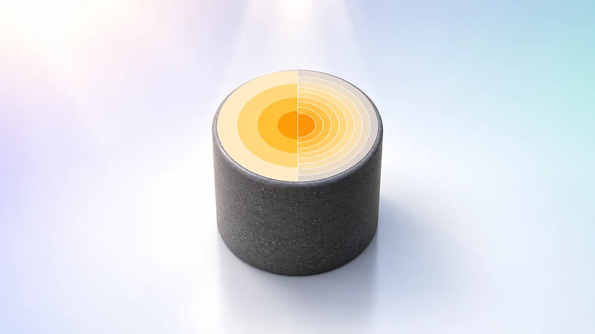
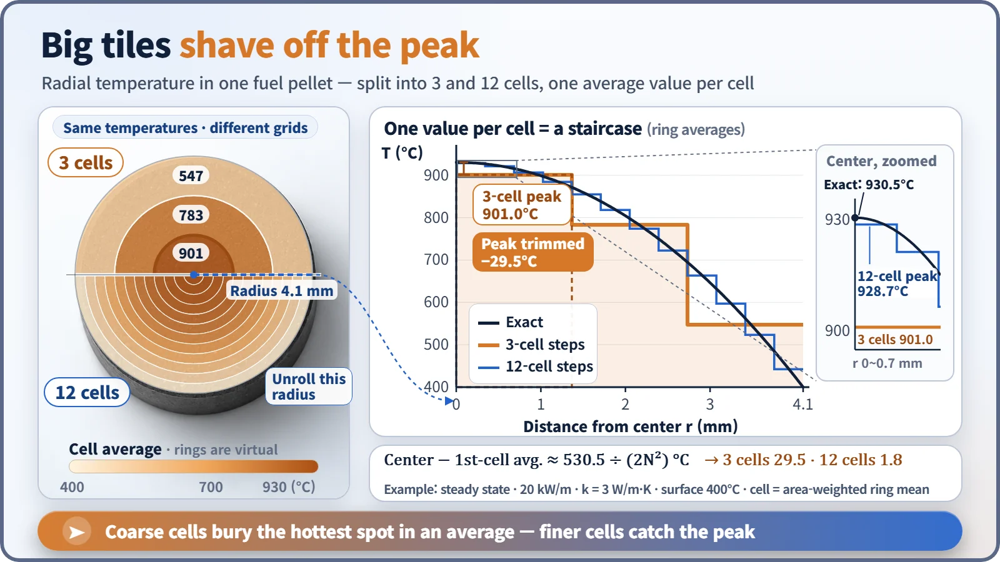
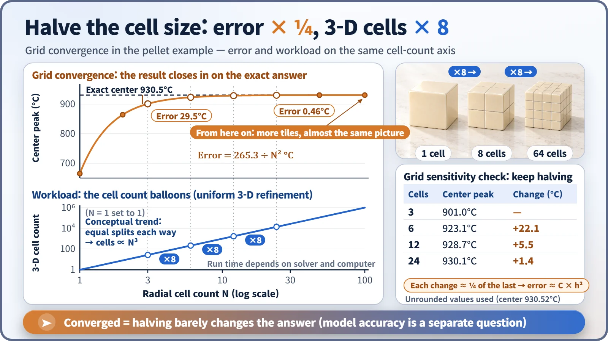

Modeling, Simulation & Computation · 257
How Many Mosaic Tiles Are Enough? — The Grid in Numerical Analysis
One value per cell, like one color per mosaic tile. Finer cells cut the error, cost far more, and are refined only until the answer stops changing.

A computer cannot solve for infinitely many points, so it splits space into a finite grid of cells with one value each. Coarse cells smear out peaks; finer cells cut the error (about a quarter for each halving of the cell size) but multiply the workload, so modelers refine until the answer stops changing. [1]
Three answers from one formula
We calculated the temperature at the center of the same fuel pellet three times and got 665 °C, 901 °C and 930 °C. Same equation, same material, same power. The only change was how many cells the pellet was split into: one, three and a hundred. Answers 265 degrees apart from the same formula point straight at the culprit, the grid of numerical analysis.
Computers don't know smooth curves
Temperature and neutron flux (a measure of how many neutrons are flying around) vary continuously through space, and the equations describing them must hold at every point, which means infinitely many unknowns. A computer can only handle a finite list of numbers.
So space is chopped into small cells. Each cell gets one representative value, and equations describe how much heat or how many neutrons it trades with its neighbors. The unknowns shrink to the number of cells, and the problem becomes simultaneous equations a computer can solve. That framework is a grid or mesh; one piece is a cell, and the place a value sits is a node. The lines are imaginary: there are no real partitions inside a reactor. [1]
A face made of nine tiles
In a mosaic, each tile carries one color. Big tiles make a face look jagged; small tiles make it smooth. Grid cells are those tiles: one value per cell.
Take a fuel pellet about 8 mm across with an example linear power of 20 kW/m, constant thermal conductivity and a 400 °C surface. The exact (analytical) answer is a parabola, hottest in the middle at about 930 °C. [2]

With 3 cells across the radius, the middle cell reads 901 °C. It contains everything from 930 °C at the center to the 800s at its edge, and averaging shaves off the peak. That first answer of 665 °C came from treating the whole pellet as a single tile, passing off its average temperature as the temperature of the hottest spot.
Halve the size, quarter the error
Common methods shrink the error roughly as error ≈ C × h², where h is the cell size and C a constant set by the problem. Halve the cell size and the error drops to a quarter. [1]
| Radial cells | Center-cell peak | Change from previous step |
|---|---|---|
| 3 | 901.0 °C | — |
| 6 | 923.1 °C | +22.1 °C |
| 12 | 928.7 °C | +5.5 °C |
| 24 | 930.1 °C | +1.4 °C |
Each change is about a quarter of the one before. The catch is cost: a reactor is three-dimensional, so doubling the cells in each direction multiplies the total by 2 × 2 × 2 = 8, and solving time can grow even faster. The error falls gently while the workload climbs steeply.

"When it stops changing" is the signal
Modelers therefore run a grid sensitivity check: solve the same problem on grids twice as fine each time and find the point where the value of interest no longer changes meaningfully. Past that point the result has "converged on the grid," and a grid no coarser is used.
Exact answers like the pellet's are rare. Real fuel has a temperature-dependent conductivity, a gap and cladding, so no exact formula exists, and "change it and nothing changes" is practically the only test. This check is a central step of verification: "did we solve the equations correctly?" [1]
Three kinds of grid in plant calculations
Fuel rods: the pellet is split like an onion into a few to a few dozen concentric rings, and the rod into axial segments; the pellet edge is often divided more finely because power concentrates there as burnup progresses. [3]
The core: a fuel assembly about 20 cm wide is commonly divided into one cell or 2 × 2 cells across and roughly 18 to 24 layers in height; these cells are called nodes. [4]
Cooling systems: accident analyses split piping, the core and the steam generators into tens to hundreds of volumes linked by flow paths. This nodalization is itself checked for adequacy.
Fine where values change sharply, coarse where they change gently: a good grid is a mosaic that saves its smallest tiles for the eyes, nose and mouth.
What more cells can't fix
"Fine enough cells always give the right answer." If the equations or material values are wrong, you converge precisely onto a wrong answer. The grid is about how carefully the equations were solved, not whether they match reality.
"More cells mean a better calculation." Once the answer stops changing at the accuracy you need, that is enough; spare computer time is better spent on more cases.
"Grid and lattice are the same thing." In reactor physics, a lattice is the checkerboard arrangement of fuel rods, not a computational grid.
Key takeaways
A grid trades accuracy against computing time. Refine until the answer stops changing, then stop: that is how you find out how many tiles are enough.